Jeroen De Maeyer, Bart Moyaers, Eric Demeester
杰罗恩·德·梅耶, 巴特·莫耶斯, 埃里克·德米斯特
Departement of Mechanical Engineering
机械工程系
KU Leuven 鲁汶大学
Technology Campus Diepenbeek, Belgium
比利时迪彭贝克技术校区
Email: jeroen.demaeyer@kuleuven.be
电子邮件：jeroen.demaeyer@kuleuven.be
Many industrial robot applications require fewer task constraints than the robot's degrees of freedom. For welding robots, for example, rotations of the welding torch around its axis do not negatively impact welding quality. Furthermore, the tool center point's Cartesian position and desired orientation as a function of time is often determined by the (manufacturing) process. Nevertheless, programming these robots can be time consuming. Reducing or eliminating this programming cost will allow robots to be used for producing small series. Recently, a promising software package for Cartesian path planning with the name Descartes was released by the ROS-Industrial community. To the authors' knowledge, an in-depth description of this algorithm and an experimental evaluation is lacking in literature. This paper describes the path planning approach used by the Descartes package. Moreover, the software's performance is evaluated for several key robot welding tasks and the encountered limitations are discussed. In addition, we show that the planner's performance can be improved by changing the cost function that the planner's graph search algorithm minimises.
许多工业机器人应用所需的作业约束少于机器人的自由度。以焊接机器人为例，焊枪绕其轴线的旋转不会对焊接质量产生负面影响。此外，工具中心点的笛卡尔位置及其随时间变化的期望姿态通常由（制造）工艺决定。尽管如此，编程这些机器人可能耗时较长。减少或消除这一编程成本将使机器人能够用于生产小批量产品。近期，ROS-工业社区发布了一款名为 Descartes 的直角坐标路径规划软件包，展现出良好的前景。据作者所知，目前文献中缺乏对该算法的深入描述及实验评估。本文详细阐述了 Descartes 软件包所采用的路径规划方法，并对该软件在多项关键机器人焊接任务中的性能进行了评估，同时探讨了所遇到的限制。此外，我们还展示了通过调整规划器图搜索算法所最小化的成本函数，可以提升规划器的性能。
In 2016, more than two million industrial robots were in operation around the world [1]. Programming these robots can be time consuming. This is a limiting factor if robots are to be adopted for the production of small batch sizes. Automating the programming process will increase the cost efficiency of robots in those applications, provided that collision-free robot programs are generated that adhere to the manufacturing process's requirements. Common tasks for industrial robots result in kinematic redundancy. For example, when using a 6 degrees of freedom (DOF) robot arm for arc welding, the rotation of the tool (welding torch) is not completely defined by the process. The task only restricts 5 out of the 6 available DOF. Many other applications have such kinematic redundancy, including grinding, deburring and painting. Mounting these robots on a rail further increases the degrees of freedom of the robot, thereby also increasing the kinematic redundancy. Moreover, in many of these applications, the position of the tool center point (TCP) and often also the TCP's desired orientation is known as a function of time in order to optimally execute the task. In welding applications, for example, the welding torch's Cartesian position is determined by the position of the pieces that need to be welded together, and its velocity and desired orientation are prescribed by the welding process and relative location of the work pieces. Often, acceptable deviations from[1]
2016 年，全球有超过两百万台工业机器人在运行[1]。编程这些机器人可能会耗费大量时间。如果要在小批量生产中采用机器人，这是一个限制因素。自动化编程过程将提高机器人在这些应用中的成本效益，前提是能够生成符合制造过程要求的、无碰撞的机器人程序。工业机器人的常见任务往往导致运动学冗余。例如，使用具有 6 个自由度（DOF）的机器人手臂进行弧焊时，工具（焊枪）的旋转并未完全由过程定义。任务仅限制了 6 个可用 DOF 中的 5 个。许多其他应用也存在这种运动学冗余，包括研磨、去毛刺和喷漆。将这些机器人安装在导轨上会进一步增加机器人的自由度，从而也增加了运动学冗余。此外，在这些应用中，工具中心点（TCP）的位置，以及通常 TCP 的期望方向，都是作为时间函数已知的，以便最优地执行任务。 例如，在焊接应用中，焊接炬的笛卡尔位置由需要焊接在一起的零件位置决定，其速度和所需方向则由焊接工艺和工件的相对位置规定。通常，可接受的与 [1] 的偏差
these optimal Cartesian positions, velocities and orientations are dictated by the manufacturing process as well. This paper focuses on the automatic generation of collision-free programs for arc welding robots, but most conclusions are valid for similar applications.
这些最佳的笛卡尔位置、速度和姿态同样受制造工艺的制约。本文专注于自动生成无碰撞程序，以供弧焊机器人使用，但大多数结论同样适用于类似应用。
For applications with these characteristics, path planning in operational space, often called Cartesian path planning, is required. As mentioned above, Cartesian path planning needs to deal with kinematic redundancy, which can be exploited to avoid collisions or stay away from singular configurations. Two main approaches exist. The first, called task augmentation [3], adds constraints to reduce or even avoid the redundancy. Most industrial robots have software included to control end effector motion in operational space. When using task augmentation to resolve the kinematic redundancy, the Cartesian path can be directly executed by the robot controller. This approach is used by [4] to calculate a robot program based on an analytical description of objects involved in a welding task. The second approach formulates a secondary objective in addition to the kinematic task constraints. This results in an optimisation problem that can be solved locally for each trajectory point [5] [2] [6] or globally for the whole trajectory [3]. Both methods can be combined. The optimization problem can also be formulated as a graph search problem. A formal description of this approach is given in [7].
对于具有这些特性的应用，需要在操作空间中进行路径规划 ，通常称为笛卡尔路径规划。如上所述，笛卡尔路径规划需要处理运动学冗余，这可以被利用来避免碰撞或远离奇异构型。存在两种主要方法。第一种称为任务增强[3]，通过增加约束来减少甚至消除冗余。大多数工业机器人配备有控制末端执行器在操作空间中运动的软件。在使用任务增强来解决运动学冗余时，机器人控制器可以直接执行笛卡尔路径。这种方法被[4]用于基于焊接任务中涉及对象的解析描述来计算机器人程序。第二种方法是在运动学任务约束之外，制定一个次要目标。这导致了一个优化问题，可以针对每个轨迹点[5][2][6]局部求解，或针对整个轨迹[3]全局求解。两种方法可以结合使用。优化问题也可以被表述为一个图搜索问题。 该方法的正式描述见于[7]。
Path planning algorithms can be implemented and tested in different open source software environments. Examples are the Robotics Library (RL) [8], OpenRave [9] and Robotic Operating System (ROS) [10]. Within the latter one, there is an industrial consortium, called ROS-Industrial, which recently published a software package, Descartes, that implements a graph based path planning algorithm, and which is specifically designed for applications such as robot welding. Where a path is given in operational space and the pose for the end effector is under-defined. The source code is available on the Github page of ROS-Industrial [11]. No formal description of this software has been found by the authors and few example applications are available for evaluation. This paper addresses this lack of description and evaluation. In addition, we propose a new[2]cost function to improve the planner's performance for robotic welding.
路径规划算法可在不同的开源软件环境中实现与测试。例如，Robotics Library（RL）[8]、OpenRave [9] 和 Robotic Operating System（ROS）[10]。在后者中，有一个名为 ROS-Industrial 的工业联盟，该联盟最近发布了一个名为 Descartes 的软件包，它实现了基于图的路径规划算法，专门为机器人焊接等应用设计。在给定操作空间路径且末端执行器姿态定义不足的情况下。源代码可在 ROS-Industrial 的 Github 页面上获取 [11]。作者未找到该软件的正式描述，且可用于评估的示例应用寥寥无几。本文旨在弥补这一描述与评估的不足。此外，我们提出了一种新的 [2] 成本函数，以提升机器人焊接规划器的性能。
This paper is organised as follows. Section II describes the path planning problem for robot welding and the adopted performance criteria more formally. Next, Section III describes the approach used to solve this problem, as implemented in the Descartes package. In robot Section IV, the Descartes approach is applied to some key welding tasks and its performance is evaluated. Based on this evaluation, an improved cost function for the planning algorithm is proposed, implemented and evaluated in Section V. Conclusions are presented in Section VI.
本文的组织结构如下。第二部分更正式地描述了机器人焊接的路径规划问题及其采用的性能标准。接下来，第三部分介绍了在 Descartes 软件包中实现的问题解决方法。在第四部分中，Descartes 方法被应用于一些关键的焊接任务，并对其性能进行了评估。基于这一评估，第五部分提出、实现并评估了规划算法的改进成本函数。最后，第六部分给出了结论。
This section describes several characteristics and requirements for the automatic generation of collision-free paths for arc welding robots. The notation is based on [5]. The dynamics of the robot are not considered in the path planning approach discussed in this paper.
本节阐述了弧焊机器人无碰撞路径自动生成的若干特性和要求。符号表示基于[5]。本文讨论的路径规划方法中未考虑机器人的动力学特性。
Kinematic redundancy and end effector tolerances. Suppose a planar robot gets the task to follow a path with its end effector in a two-dimensional operational space. For this example we assume that only the position of the end effector is specified, the orientation can be freely chosen. When using graph search methods, a discretised version of this task is formulated. The path is specified in Cartesian points :
运动学冗余与末端执行器公差。假设一个 平面机器人被赋予任务，要求其末端执行器在二维操作空间内沿指定路径移动。在此例中，我们假设仅末端执行器的位置被明确指定，其方向可自由选择。在使用图搜索方法时，该任务被转化为离散化形式。路径以 个笛卡尔点 的形式给出：
Solving the discrete path planning problem means finding feasible joint positions for each Cartesian point :
解决离散路径规划问题意味着为每个笛卡尔点 找到可行的关节位置 ：
Feasibility means satisfying the robot's kinematics for each Cartesian point:
可行性意味着满足机器人在每个笛卡尔点的 运动学要求：
Notice that in this example there are an infinite number of joint solutions for every Cartesian point , because the end effector's orientation is not specified. Notice also that, even if the orientation is specified, there are still two solutions to the inverse kinematics, the arm up and arm down configuration. Ideally, the planning algorithm should be able to exploit these properties in order to find feasible paths.
请注意，在这个例子中，对于每一个笛卡尔坐标点 ，存在无数个关节解 ，因为末端执行器的方向未被指定。同时也要注意到，即使指定了方向，逆向运动学仍然存在两种解，即手臂向上和手臂向下配置。理想情况下，规划算法应能利用这些特性来寻找可行的路径。
Furthermore, the motion between consecutive joint positions has to be physically executable by the robot: it should be collision-free and should adhere to the robot's maximum velocity and acceleration limitations. In addition, the path should be discretised fine enough to ensure that the end effector constraints are also satisfied in between the specified path points.
此外，连续关节位置之间的运动必须由机器人实际执行：它应避免碰撞，并遵守机器人的最大速度和加速度限制。另外，路径应足够细化，以确保在指定路径点之间也能满足末端执行器的约束条件。
As a variation on this problem, we could also place a tolerance on the -position of the end effector, . In that case, the path planning algorithm should be able, for example, to prioritize the orientation freedom over the tolerance, i.e. the planner should be able to prefer deviations from the desired end effector's orientation above deviations from the desired -position when searching for a collision-free path. For arc welding robots, such prioritization is imperative: whereas the orientation around the welding torch axis is of lesser importance, deviations from the ideal welding torch orientation for the other two angles ( and ) is not equal. Depending on the welding type, a deviation in one angle is often preferred over the other , or vice versa.
作为此问题的变体，我们还可以在末端执行器的 位置上设置一个公差， 。在这种情况下，路径规划算法应能够例如优先考虑方向自由度而非 公差，即规划器在寻找无碰撞路径时应倾向于偏离期望的末端执行器方向，而不是偏离期望的 位置。对于弧焊机器人而言，这种优先级至关重要：尽管焊炬轴 周围的方向重要性较低，但对于其他两个角度（ 和 ），偏离理想焊炬方向的情况并不相同。根据焊接类型，一个角度 的偏差往往优于另一个 ，反之亦然。
The following section extends this problem to a threedimensional operational space. When evaluating a path planning algorithm for arc welding robots, the following performance criteria will be valued:
以下部分将此问题扩展到三维操作空间。在评估弧焊机器人的路径规划算法时，将重视以下性能标准：
The Descartes planning approach explained in the following section will be evaluated in Section IV w.r.t. the above criteria.
下一节中介绍的笛卡尔规划方法将在第四节中根据上述标准进行评估。
This section describes the Cartesian path planning approach of the Descartes package [12], a ROS-Industrial project [11]. The Descartes package was first presented at ROSCON and in a ROS-Industrial community meeting in 2015 [12] [13]. However, a formally published description of the software has not been found by the authors. Therefore, this section describes the path planning approach used in the package. Some details are available in the ROS-Industrial training session slides [14]. This section is partially based on those slides; missing details were completed through a thorough analysis of the source code.
本节介绍 Descartes 包[12]的笛卡尔路径规划方法，该包是 ROS-Industrial 项目[11]的一部分。Descartes 包最初于 2015 年在 ROSCON 及 ROS-Industrial 社区会议上展示[12][13]。然而，作者尚未找到该软件的正式出版描述。因此，本节将阐述该包所采用的路径规划方法。部分细节可从 ROS-Industrial 培训会议的幻灯片[14]中获取。本节内容部分基于这些幻灯片，缺失的细节则通过深入分析源代码得以补充。
Before introducing the planning algorithm, the axis conventions used in the software are shown in Fig. 1. The end effector frame is positioned at the welding tip. The zaxis is chosen along the welding torch, the -axis in the welding direction and the -axis completing the right hand frame. Every trajectory point gets a local frame assigned that indicates the preferred position and orientation of the end effector in that trajectory point. These coordinate frames are expressed in a common reference frame .
在介绍规划算法之前，软件中使用的轴约定如图 1 所示。末端执行器坐标系 位于焊接尖端。z 轴沿焊接炬方向选择， 轴沿焊接方向， 轴完成右手坐标系。每个轨迹点都被分配一个局部坐标系 ，指示该轨迹点处末端执行器的优选位置和方向。这些坐标系在公共参考坐标系 中表示。
In the software, every path point is called a trajectory point. However, these points do not contain speed nor acceleration information. Only an upper limit on the travel time between two successive trajectory points is specified in the software, called the TimingConstraint.
在软件中，每个路径点被称为轨迹点。然而，这些点并不包含速度或加速度信息。软件中仅规定了相邻两个轨迹点间移动时间的上限，这一限制称为时间约束（TimingConstraint）。
The planning algorithm can be divided in three important phases, see Fig. 2. In phase one, the given trajectory is converted to joint space, if necessary. In phase two, the joint solutions created in phase one are organised in a graph. Finally, in phase three, a graph search is applied to the graph of
规划算法可分为三个重要阶段，如图 2 所示。在第一阶段，如有必要，将给定轨迹转换为关节空间。在第二阶段，将第一阶段生成的关节解组织成一个图。最后，在第三阶段，对关节图应用图搜索算法。
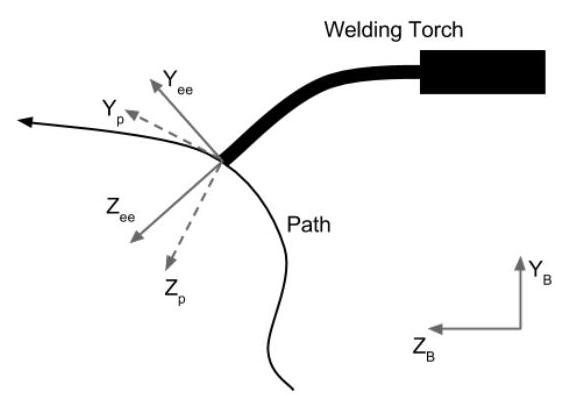
Fig. 1. Definition of path frame (p) and end effector frame (ee) for a Cartesian trajectory point. The difference between the two frames must lie within the specified tolerance limits. The frames are expressed in a reference frame (B)
图 1. 笛卡尔轨迹点的路径框架（p）和末端执行器框架（ee）的定义。这两个框架之间的差异必须位于指定的公差范围内。这些框架以参考框架（B）表示。
phase two to get a joint trajectory that minimizes a given cost function. These three phases will now be discussed in more detail.
第二阶段旨在获得一个联合轨迹，该轨迹使给定的成本函数最小化。现在将详细讨论这三个阶段。
Phase 1. The algorithm starts from a list of so-called trajectory points, which can either be expressed as desired Cartesian poses for the end effector or as desired joint positions. When a Cartesian end effector pose is specified, this pose needs to be converted to feasible joint positions before the graph search can start. Fig. 2 illustrates this procedure. For each trajectory point, every parameter of the preferred pose (position or Euler angle) can be assigned a tolerance range. For a non-zero tolerance, the trajectory point is uniformly sampled in the tolerance range, with a user-specified resolution. This leads to multiple joint or Cartesian points. Every Cartesian point is then converted into one or more joint positions according to the inverse kinematics of the robot. Note that the tolerance on the end effector orientation is defined as a deviation from the desired Euler xyz angles that express the trajectory path point in the base frame. A specific implementation of the Cartesian trajectory point, a so-called axial-symmetric point, which allows free rotation around one axis and no tolerance on the others, is available in the software. This makes the implementation more convenient for some tasks. When a trajectory point is given in joint space, only the tolerances need to be processed for this point as shown in Fig. 2. These different types of trajectory points allow the user to specify a hybrid trajectory, containing both Cartesian and joint space trajectory points, with or without tolerances.
第一阶段。该算法从一系列所谓的轨迹点开始，这些点可以表示为末端执行器的期望笛卡尔位姿或期望的关节位置。当指定一个笛卡尔末端执行器位姿时，在图搜索开始之前，需要将此位姿转换为可行的关节位置。图 2 展示了这一过程。对于每个轨迹点，优选位姿（位置或欧拉角）的每个参数都可以分配一个公差范围。对于非零公差，轨迹点在公差范围内以用户指定的分辨率均匀采样，从而产生多个关节点或笛卡尔点。每个笛卡尔点随后根据机器人的逆运动学转换为一个或多个关节位置。注意，末端执行器方向的公差定义为相对于表示轨迹点在基坐标系中的期望欧拉 xyz 角的偏差。软件中提供了一种特定的笛卡尔轨迹点实现，即所谓的轴对称点，它允许围绕一个轴自由旋转，而对其他轴没有公差。 这使得某些任务的实现更加便捷。当给定关节空间中的轨迹点时，只需对该点进行公差处理，如图 2 所示。这些不同类型的轨迹点使用户能够指定混合轨迹，包含笛卡尔空间和关节空间轨迹点，无论是否带有公差。
Phase 2. The resulting joint positions are organised as nodes (vertices) in a graph. Multiple nodes can belong to the same trajectory point, as schematically shown in Fig. 3. When collision checking is enabled, a joint position resulting in collision is not added to the graph. Edges are constructed between all nodes of two successive trajectory points. Before adding an edge between two nodes, the software checks the time constraint TimingConstraint, if specified. The angle that each joint has to travel is compared with its velocity limit times the maximum travel time. If the edge is added, the cost is set proportional to joint motion. For an edge going from joint position to , the cost is defined as the -norm
第二阶段。生成的关节位置被组织为图中的节点（顶点）。多个节点可以属于同一个轨迹点，如图 3 所示。当启用碰撞检测时，导致碰撞的关节位置不会添加到图中。在两个连续轨迹点的所有节点之间构建边。在添加两个节点之间的边之前，软件会检查指定的时间约束 TimingConstraint。每个关节需要移动的角度与其速度限制乘以最大移动时间的乘积进行比较。如果添加了边，则成本设置为与关节运动成正比。对于从关节位置 到 的边，成本定义为 -范数。
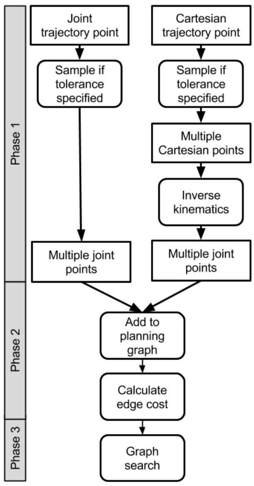
Fig. 2. Descartes' approach to convert different types of trajectory points to joint positions (phase 1), to create a planning graph (phase 2), and to search this graph for a feasible path (phase 3 ).
图 2. 笛卡尔方法将不同类型的轨迹点转换为关节位置（阶段 1），创建规划图（阶段 2），并在该图中搜索可行路径（阶段 3）。
of the difference of the two joint positions:
两个关节位置之间的差异：
The use of an alternative cost function is discussed in Section V.
在第五节中讨论了使用替代成本函数的方法。
Phase 3. The resulting directed graph enables the use of standard graph search algorithms to find the shortest path. In Descartes' case, Dijkstra's algorithm [15] is used from the Boost C++ library [16].
第三阶段。由此生成的有向图使得可以利用标准图搜索算法来寻找最短路径。在笛卡尔的情况下，使用了来自 Boost C++库的 Dijkstra 算法[15]。
The final result is a sequence of joint positions that, when followed by the robot, result in the desired Cartesian path within the given tolerances, if such a path exists and is found by the inverse kinematic solver. The sequence of joint positions should allow easy execution on standard industrial robot controllers. However, as discussed in the next section, this last step is not always possible. The joint trajectory can contain large accelerations and even collisions in certain cases. When these problems occur, re-planning, or post processing of the joint trajectory is necessary.
最终结果是一系列关节位置，当机器人遵循这些位置时，若逆运动学求解器找到并存在这样的路径，则会在给定公差范围内实现所需的笛卡尔路径。这一系列关节位置应便于在标准工业机器人控制器上执行。然而，如下一节所述，这最后一步并非总能实现。关节轨迹可能包含较大的加速度，甚至在某些情况下会导致碰撞。当这些问题出现时，需要重新规划或对关节轨迹进行后处理。
A sparse version of the planning software exists, which allows faster execution by only calculating the inverse kinematics for a subset of the trajectory points. The intermediate
存在一种稀疏版本的规划软件，它通过仅计算轨迹点子集的逆运动学，实现了更快的执行速度。中间部分
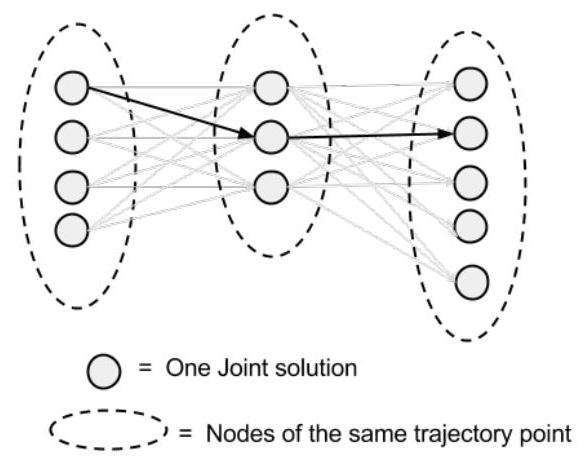
Fig. 3. Schematic representation of the planning graph in the Descartes package.
图 3. Descartes 包中规划图的示意表示。
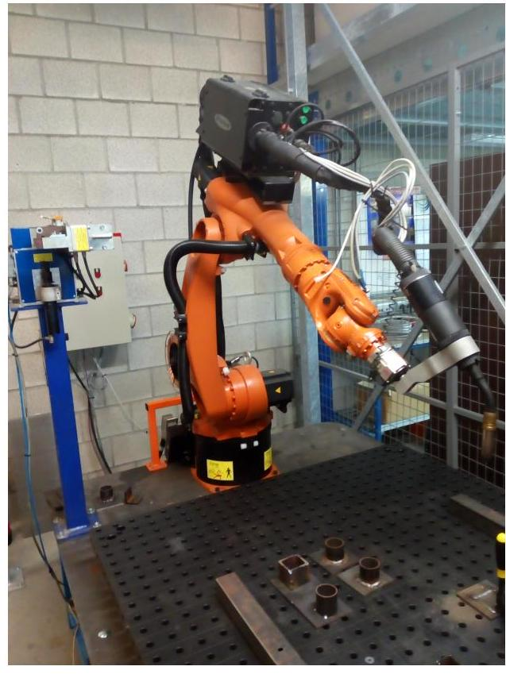
Fig. 4. Our Kuka kr5-arc robot with welding torch.
图 4. 配备焊接炬的 Kuka kr5-arc 机器人。
points are calculated by interpolating the joint motion of the sparse points. The resulting error on the Cartesian path is checked using forward kinematics. If the error is too big, an extra point is added to the sequence of sparse points to decrease the error, and the path is re-planned.
通过插值稀疏点的关节运动来计算点。使用正向运动学检查生成的笛卡尔路径上的误差。如果误差过大，则在稀疏点序列中添加一个额外点以减小误差，并重新规划路径。
This section evaluates the Descartes package with respect to the requirements given in Section II. For this, the robot model (shown in Fig. 5) of our Kuka kr5 arc welding robot (shown in Fig. 4) is used. We have adapted the software to enable collision detection with objects based on the source of the Godel [17] project, another ROS-I project. Our source code is available at [18]. Based on this code we also made a new tutorial for Descartes available at [19] and [20].
本节评估 Descartes 包相对于第二节中提出的需求。为此，我们使用了 Kuka kr5 弧焊机器人的机器人模型（如图 5 所示），该机器人实物如图 4 所示。我们根据另一个 ROS-I 项目 Godel [17]的源码，对软件进行了适配，以实现基于该源码的对象碰撞检测功能。我们的源代码可在[18]处获取。基于此代码，我们还制作了新的 Descartes 教程，可在[19]和[20]处查阅。
In order to evaluate Descartes' performance, Cartesian trajectory planning is executed for three welding tasks. Task A
为了评估笛卡尔的表现，针对三个焊接任务执行了笛卡尔轨迹规划。任务 A
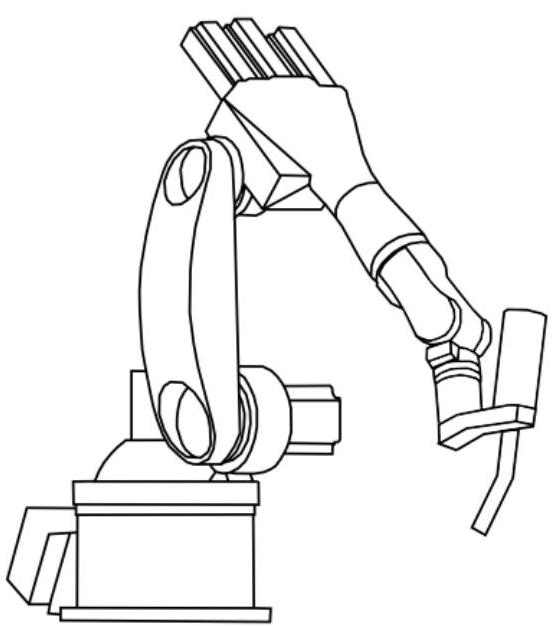
Fig. 5. Kuka kr5-arc robot model used in simulations. The wire feeder and cables are not included in the model, because they do not have a big influence on the welding tasks that are simulated, neither are they the focus of the Descartes software package.
图 5. 用于仿真的 Kuka kr5-arc 机器人模型。送丝器和电缆未包含在模型中，因为它们对所模拟的焊接任务影响不大，也不是 Descartes 软件包的关注重点。
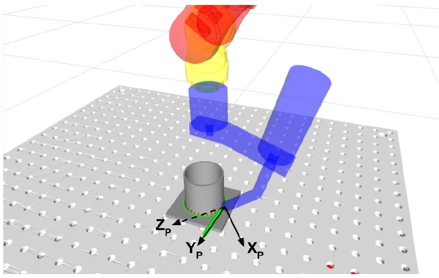
Fig. 6. Welding task A: "cylinder on a plane".
图 6. 焊接任务 A：“平面上的圆柱体”。
and B are shown in Fig. 6 and 7, task C is discussed later in this section. For task A, welding the cylinder, a tolerance of is allowed around the tool's z-axis, which does not influence the welding process. For task B, welding the Lprofile, the torch is allowed to rotate around an axis along the path with . This allows the robot to avoid collisions with the obstacle, a small plate mounted at the inside of the L-profile. The planning results in a joint motion profile that the robot should execute, shown in Fig. 8.
A 和 B 任务分别如图 6 和图 7 所示，C 任务将在本节稍后讨论。对于 A 任务，即焊接圆柱体，工具的 z 轴周围允许有 的公差，这不会影响焊接过程。对于 B 任务，焊接 L 型材，焊炬允许沿路径 的轴线旋转 。这使得机器人能够避开障碍物，即安装在 L 型材内侧的小板。规划结果生成机器人应执行的关节运动轮廓，如图 8 所示。
Computation time. When planning these Cartesian paths, the inverse kinematics of the robot are solved multiple times for every trajectory point. Solving the inverse kinematics can be executed with the standard solver which uses the KDL library [21]. In this case, the solution is calculated with a numerical method. Alternatively, IKFast is a library that enables to create code to solve the kinematics analytically. This method can reduce the calculation time drastically. For example, path planning for task B with 50 trajectory points
计算时间。在规划这些笛卡尔路径时，针对每个轨迹点，机器人的逆运动学需多次求解。求解逆运动学可通过使用 KDL 库[21]的标准求解器执行，此时采用数值方法计算解决方案。或者，IKFast 库能够生成 代码，以解析方式求解运动学问题。这种方法能大幅减少计算时间。例如，针对包含 50 个轨迹点的任务 B 进行路径规划时。
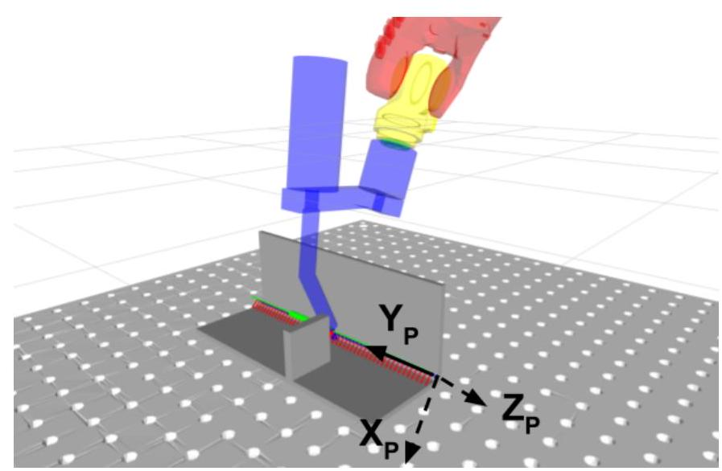
Fig. 7. Welding task B: "L-profile with obstacle"
图 7. 焊接任务 B：“带障碍的 L 型轮廓”
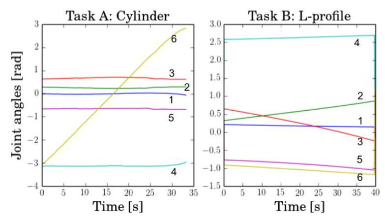
Fig. 8. Joint motion profile for the two welding tasks shown in Fig. 6 and 7. Joints are numbered from base to tip.
图 8. 图 6 和图 7 所示两项焊接任务的关节运动轨迹。关节编号从基座至末端。
results in the computations times shown below, given for the different phases described in Section III, where phase 1 includes the inverse kinematics calculation (and collision detection). The KDL solver is executed with 20 different stating conditions for each trajectory point to get enough different joint solutions.
导致计算时间 如下所示，针对第三节中描述的不同阶段给出，其中阶段 1 包括逆运动学计算（及碰撞检测）。KDL 求解器针对每个轨迹点执行 20 次不同初始条件，以获取足够的不同关节解。
| phase 1 阶段一 | phase 2 第二阶段 | phase 3 第三阶段 | |
|---|---|---|---|
| KDL | |||
| IKFast |
The reason that the computation times for phase 2 and phase 3 are also longer for KDL is that it returns more inverse kinematic solutions and therefore results in a bigger planning graph. There are two reasons why KDL returns more joint solutions for the inverse kinematics than the IKFast solver. First, some of the solutions returned by the KDL solver are almost identical, apart from small errors caused by numerical approximations. Second, the IKFast solver does not return solutions with joint values outside the interval , whereas the joint limits on joint 4 and 6 go up to .[3]
KDL 在第二和第三阶段的计算时间较长的原因在于，它返回了更多的逆运动学解，从而导致规划图更为庞大。KDL 比 IKFast 求解器返回更多关节解的原因有两点。首先，KDL 求解器返回的一些解几乎相同，仅因数值近似产生微小误差。其次，IKFast 求解器不返回关节值超出区间 的解，而关节 4 和 6 的限制则可高达 。 [3]
The KDL solver does return solutions with joint values outside , but obeying the robot joint limits. Even though IKFast is considerably faster than KDL, IKFast is limited to robots with 6 DOF or less. However for robots mounted on a rail, the IKFast solver could be adapted to handle this.
KDL 求解器确实会返回关节值超出 但符合机器人关节限制的解。尽管 IKFast 比 KDL 快得多，但 IKFast 仅限于 6 自由度或以下的机器人。然而，对于安装在导轨上的机器人，IKFast 求解器可以进行适配以处理这种情况。
Memory requirements. When using the IKFast solver, the computation time is not a limiting factor any more, but increasing the path complexity will cause excess memory usage. For example, a tolerance on one axis of sampled in intervals of results in 360 nodes per trajectory point in the graph. An edge cost is calculated and saved between every node of two successive trajectory points (except when the joint speed limit dictates that the motion is infeasible). The memory requirements to save all the edges can quickly escalate to more than a standard computer has available. Suppose there are trajectory points and joint solutions for each trajectory point. corresponds to the number of sampled poses in the discretised tolerance region. In general is not constant, the different robot configurations increase even more, typically a factor 2 for our robot. The number of nodes and edges in the graph roughly equals:
内存需求。在使用 IKFast 求解器时，计算时间不再是限制因素，但增加路径复杂度会导致内存使用量过大。例如，在某轴上以 的容差和 的间隔采样，会导致图中的每个轨迹点有 360 个节点。计算并保存两个连续轨迹点之间每个节点的边成本（除非关节速度限制判定运动不可行）。保存所有边的内存需求可能迅速攀升至超过标准计算机可提供的容量。假设有 个轨迹点，每个轨迹点有 个关节解。 对应于离散容差区域中采样姿态的数量。通常， 不是恒定的，不同的机器人配置会进一步增加 ，对于我们的机器人，这一般是两倍的增长。图中节点和边的数量大致为：
For the simple task, with only a tolerance on the z-axis ( sampled in intervals of ) and 30 trajectory points, this results in nodes and edges, corresponding to around of required RAM. Adding tolerances to the other tool axes will quickly increase the memory usage to unmanageable values. The use of the sparse planner can allow increased complexity of the welding task. Only adding a subset of points to the planning graph results in a lower memory demand. However, the total calculation time can become longer when it has to do a lot of re-planning when the resulting end effector path is not accurate enough. Fig. 9 shows the memory usage for the two planners for welding task B. Given were 50 trajectory points with a tolerance of around the welding path and around the torch axis. The sparse planner used 9 trajectory points and computed the other 41 points by interpolation. The planner started with 6 points but had to add a new point three times. Other options to decrease memory usage are, only adding tolerances to specific trajectory point where they are excepted to be useful and adding fewer trajectory points on a sections of the path where less complicated robot motion is excepted.
对于这一简单任务，仅在 z 轴上设置公差（以 为间隔采样 ）并包含 30 个轨迹点，结果生成 个节点和 条边，对应约需 的 RAM。若将公差扩展至其他工具轴，内存需求将迅速攀升至难以管理的地步。采用稀疏规划器则能允许焊接任务的复杂度提升。仅向规划图中添加部分点即可降低内存需求，然而，当最终执行器路径精度不足导致频繁重规划时，总计算时间可能会延长。图 9 展示了两种规划器在焊接任务 B 中的内存使用情况。设定包含 50 个轨迹点，焊接路径周围公差为 ，焊炬轴周围公差为 。稀疏规划器使用了 9 个轨迹点，并通过插值计算其余 41 点。规划初始阶段使用了 6 个点，但过程中不得不三次新增点。 减少内存使用的其他方法包括，仅在预期有用的特定轨迹点上添加公差，并在预期机器人运动较简单的路径段上添加较少的轨迹点。
Correctness. The created joint profile does not necessarily result in a collision-free path. For example, for welding task , a tolerance is added around the path's -axis (perpendicular to the path) and no tolerance is allowed around the other axes. The obstacle cannot be avoided if the rotation of the welding torch around the path is fixed as shown in Fig. 11. Nevertheless, Descartes still generates a motion plan. The torch pose jumps from one end of the tolerance space to the other when crossing the object, as shown in Fig. 10 and 11. No collision checking is performed in between consecutive poses
正确性。创建的关节配置文件不一定能确保无碰撞路径。例如，在焊接任务 中，路径的 -轴（垂直于路径）周围添加了公差，而其他轴则不允许有公差。如果焊接炬围绕路径的旋转被固定，如图 11 所示，则无法避开障碍物。尽管如此，Descartes 仍会生成运动规划。如图 10 和 11 所示，焊接炬姿态在穿越物体时从公差空间的一端跳到另一端。在连续姿态之间没有进行碰撞检查。
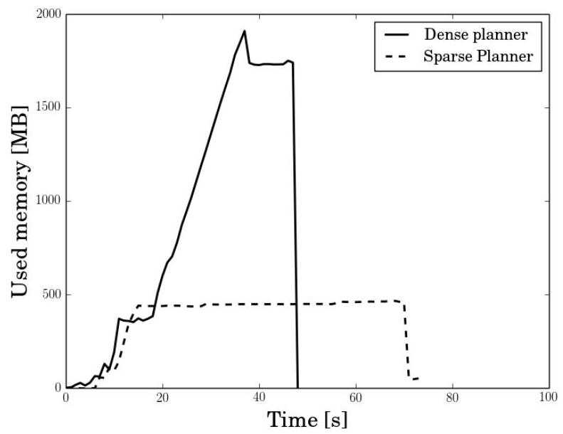
Fig. 9. Memory usage during execution of the planning algorithm for welding task B.
图 9. 焊接任务 B 规划算法执行期间的内存使用情况。
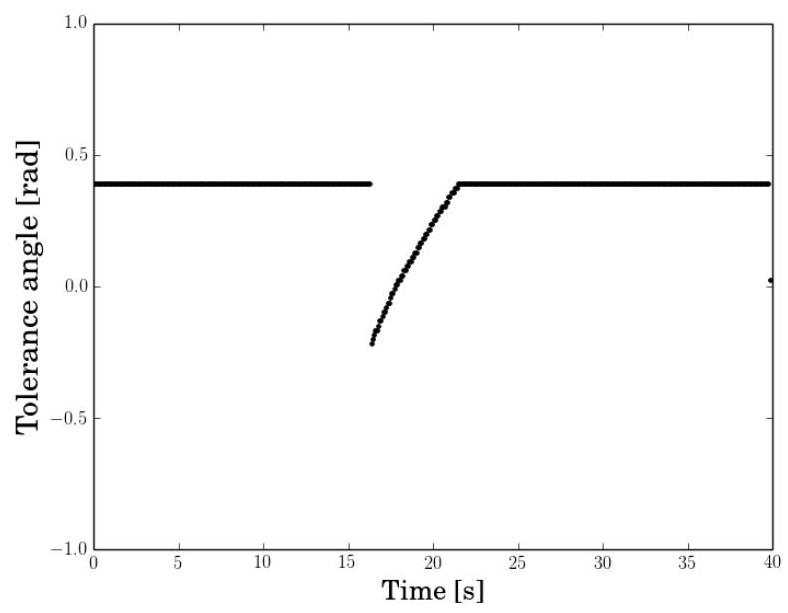
Fig. 10. Angle between path frame and end effector frame around path -axis. The torch jumps through the obstacle and then restores its initial orientation The collision is not checked in between the two trajectory points around the jump.
图 10. 路径坐标系与末端执行器坐标系在路径 轴周围的角度。焊枪越过障碍物后恢复其初始姿态。在跳跃前后的两个轨迹点之间未进行碰撞检测。
of trajectory points. Therefore the planner does not detect this collision. A limit on the allowed change in end effector pose, in addition to the joint motion limit, could avoid this problem. As a final note on correctness, the acceleration limits of the robot joints are not considered by the planning algorithm, which is another way the planner could generate infeasible trajectories.
轨迹点的分布。因此，规划器未能检测到此次碰撞。除了关节运动限制外，若能对末端执行器姿态的允许变化设定限制，便可避免这一问题。最后关于正确性的一点，规划算法并未考虑机器人关节的加速度限制，这是规划器可能生成不可行轨迹的另一种情况。
Singularities. For another task C, the L-profile is placed as shown in Fig. 12. A tolerance is specified identical to task B, the robot can turn the end effector around the path axis to avoid the obstacle. As shown in Fig. 13, joint 5 will have a negative angle when the torch is moving along the straight line. This keeps the wrist away from the singularity. When moving around the obstacle, the angle of joint 5 comes close to zero This causes joint 4 and 6 get aligned. Moving joint 4 or 6 will then cause identical end effector motion. The robot wrist gets
奇异点。对于另一个任务 C，L 型轮廓如图 12 所示放置。指定的公差与任务 B 相同，机器人可以围绕路径 轴旋转末端执行器以避开障碍物。如图 13 所示，当焊枪沿直线移动时，关节 5 将具有负角度，这使手腕远离奇异点。在绕过障碍物时，关节 5 的角度接近零，这导致关节 4 和 6 对齐。此时移动关节 4 或 6 将导致相同的末端执行器运动。机器人手腕会
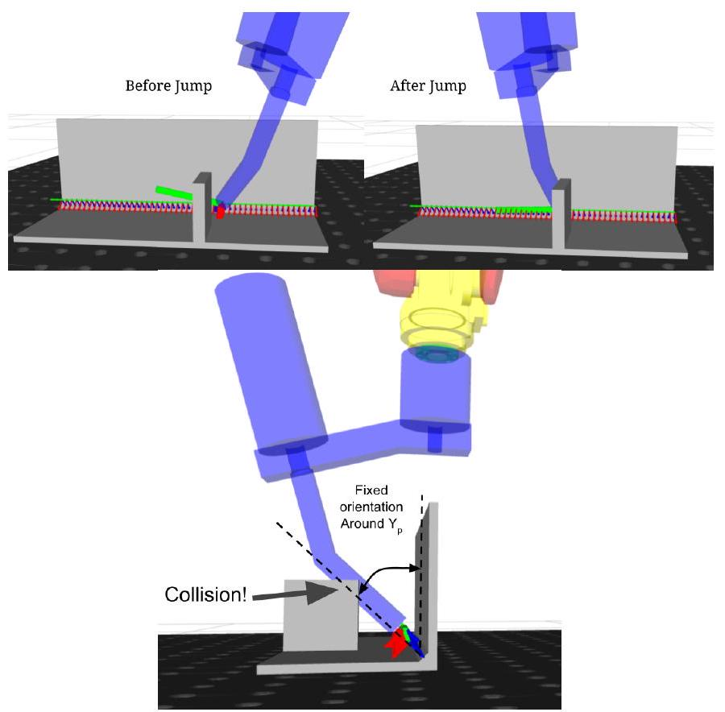
Fig. 11. The torch jumps through the obstacle. The planning algorithm does not check for collisions in between the two trajectory points around the jump.
图 11. 火炬跨越障碍物。规划算法在跳跃前后的两个轨迹点之间未进行碰撞检测。
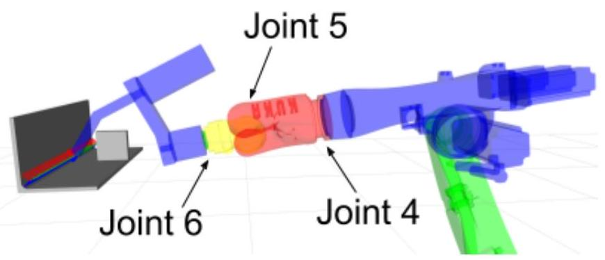
Fig. 12. Task C. Position of the robot where singularity occurs in the wrist. Joint 4 and 6 are aligned and cause identical end effector motion.
图 12. 任务 C。机器人手腕发生奇异时的位置。关节 4 和 6 对齐，导致相同的末端执行器运动。
in a singular position, shown in figure 12. In this position the angles of joint 4 and 6 grow large and in opposite directions as is visible in figure 13 at . This short example shows that the cost function that minimizes joint motion also implicitly avoids singularities, where typically large joint motion occurs. Hoverer it is also clear that this does not always works, as showed in this example. The behaviour around singularities can be examined in more detail, but this is not the focus of this paper. We can usually move the workpiece to a better position.
处于一个特殊位置，如图 12 所示。在此位置，关节 4 和 6 的角度增大且方向相反，如图 13 中 处所示。这个简短的例子表明，最小化关节运动的成本函数也隐含地避免了通常伴随大关节运动的奇异点。然而，正如本例所示，这并不总是有效。关于奇异点周围的行为可以更详细地研究，但这并非本文的重点。我们通常可以将工件移动到一个更好的位置。
When a tolerance is specified around a nominal pose, the default Descartes planner is indifferent to deviations from this nominal pose, as long as they stay within the tolerance (i.e. all joint positions of a trajectory point are assigned the same cost). However, in robot welding, a rotation of the torch around an axis other than the torch itself is undesirable and
当围绕名义姿态指定公差时，默认的笛卡尔规划器对偏离该名义姿态的行为持中立态度，只要这些偏差保持在公差范围内（即，轨迹点的所有关节位置被赋予相同的成本）。然而，在机器人焊接中，围绕除焊炬本身以外的轴进行旋转是不希望发生的，
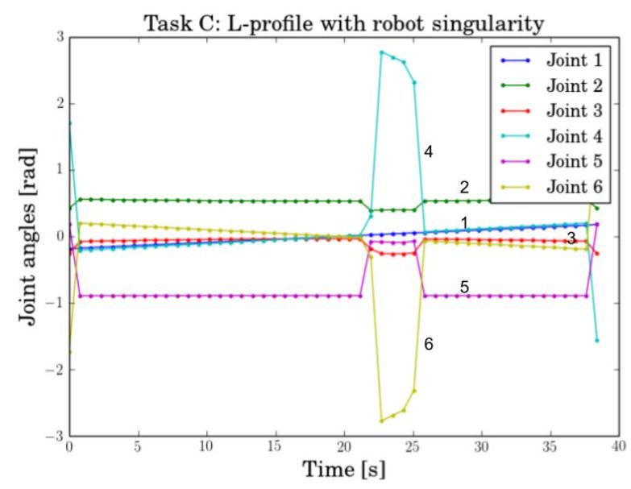
Fig. 13. Path generated close to the robot wrist singularity.
图 13. 接近机器人腕部奇异点的路径生成。
those deviations should receive a higher cost. Sometimes a small deviation on the desired torch angle is allowed to avoid collision with objects, for example in welding task B. For this reason, we have added a new cost to the nodes of the planning graph. Since the orientation tolerance on the nominal pose is given in xyz Euler angles, the deviation from this pose is also expressed in xyz Euler angles for the cost function. In this paper we do not consider position tolerance, those are more straightforward to add than orientation tolerances. Therefore, only the rotation matrices of the end effector and the trajectory point on the path are used, expressed in a base frame as implemented in the package. For some applications it could be more convenient to express the end effector frame in the local path frame and add tolerance to the Euler angles describing this transformation . This is suggested as future work. The xyz Euler angles are defined based on three elementary rotations around moving axes, as defined in [22] and used in the Descartes package.
这些偏差应承受更高的成本。有时，为了避开物体，例如在焊接任务 B 中，允许在期望的焊炬角度上出现小偏差。为此，我们在规划图的节点上新增了一个成本。由于标称姿态的方向公差以 xyz 欧拉角给出，因此成本函数中姿态偏差的表达也采用 xyz 欧拉角。本文中我们不考虑位置公差，相较于方向公差，位置公差的添加更为直接。因此，仅使用末端执行器 和路径上的轨迹点 的旋转矩阵，这些矩阵在包中实现时以基坐标系 表示。对于某些应用，将末端执行器框架在局部路径框架中表达，并对描述此变换的欧拉角添加公差 可能更为方便。这被建议作为未来的工作。xyz 欧拉角基于围绕移动轴的三个基本旋转定义，如[22]中所定义并在 Descartes 包中使用。
Where the notation stands for the rotation matrix of a path frame expressed in the base frame and for a rotation with an angle around the (moving) -axis. Ignoring the rotation around the -axis, which is not specified for the welding task, the cost function is defined as follows:
其中，符号 表示路径框架 在基框架 中的旋转矩阵，而 表示围绕（移动的） 轴以角度 进行的旋转。忽略焊接任务中未指定的围绕 轴的旋转 ，成本函数定义如下：
The factor allows to prioritize one of the two rotations. The Euler angles are calculated using the Eigen library [23], which ensures the and lie within the ranges , , and respectively. Therefore the angles are unique, except in the singular case.
因子 允许优先选择两种旋转中的一种。欧拉角使用 Eigen 库[23]计算，确保 和 分别位于范围 、 和 内。因此，角度是唯一的，除非在奇异情况下。
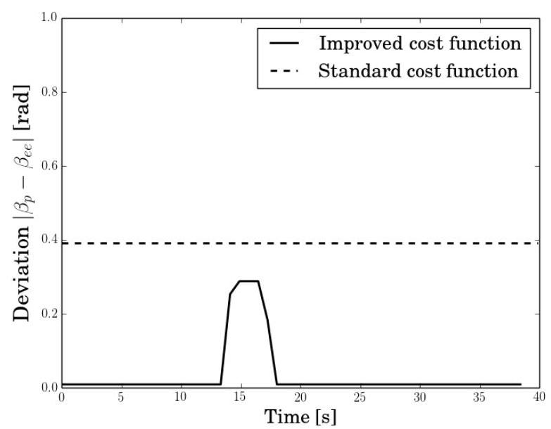
Fig. 14. Deviation from preferred pose around the path's y-axis along the path. Constant deviation of with the standard cost function. Smaller deviation with the improved cost function.
图 14. 沿路径绕路径 y 轴偏离理想姿态的情况。采用标准成本函数时，偏离度恒为 ；而采用改进的成本函数后，偏离度减小。
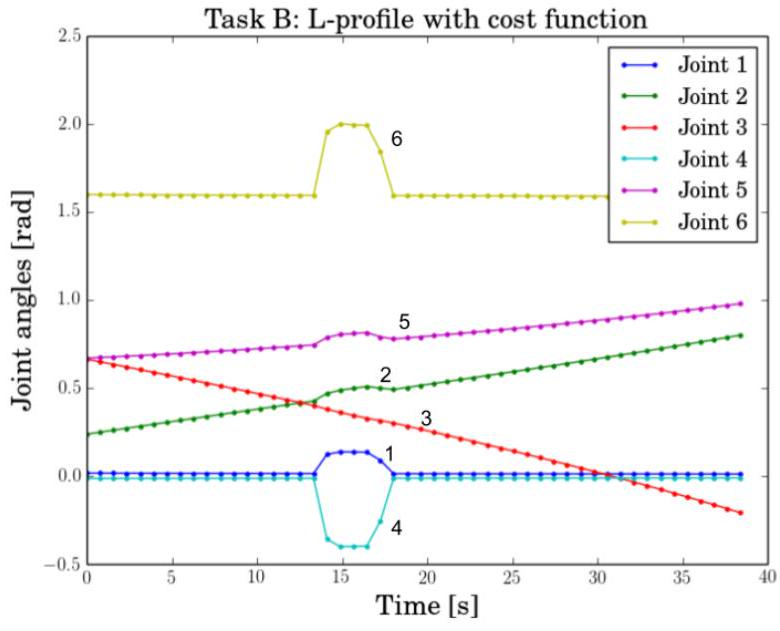
Fig. 15. Joint trajectory plan for the L-profile (task B) when using the new cost function
图 15. 使用新成本函数时 L 形轮廓（任务 B）的关节轨迹规划
Since there is no functionality in the package to add a cost to a node, this cost is added to the edge cost of all the edges leading to the node. This way the standard implementation of the graph search can still be used.
由于包中没有为节点添加成本的功能，因此该成本被加到所有指向该节点的边的成本上。这样，图搜索的标准实现仍可继续使用。
Executing the path planning with this new cost function for task B results in less deviation from the preferred pose. This is shown in Fig. 14. The deviation of the preferred pose around the path y-axis stays zero, when no deviation is necessary for collision avoidance. The dashed line represents the same orientation angle when using the standard Descartes cost function. The resulting joint motion profile for the new cost function is shown in Fig. 15. There are some brisk changes in the angles of joint 4 and 6 . This could be avoided by adding a cost function that penalizes large joint speed, acceleration or jerk.
使用这一新的成本函数执行任务 B 的路径规划，结果显示与首选姿态的偏差更小。这一点在图 14 中得以展示。在无需偏差以避免碰撞的情况下，路径 y 轴周围的首选姿态偏差保持为零。虚线表示使用标准 Descartes 成本函数时的相同方向角。新成本函数对应的关节运动轮廓如图 15 所示。关节 4 和 6 的角度出现了一些急剧变化。这可以通过增加惩罚大关节速度、加速度或急动的成本函数来避免。
To decrease programming time for industrial robots, reliable path planning algorithms are needed. This paper described the Descartes path planning package, a ROS-Industrial project intended for use in applications such as welding, painting or grinding. The approach is promising in that it computes globally optimal, collision-free paths for the discretised problem. Furthermore, it allows for a flexible specification of desired robot paths as sequences of Cartesian end effector poses or joint points, with specification of the allowed tolerance on the various degrees of freedom. Descartes is specifically designed to handle kinematic redundancy in path planning problems. This redundancy follows amongst others, from the tolerances on the desired path (under-defined end effector poses).
为减少工业机器人的编程时间，需要可靠的路径规划算法。本文介绍了 Descartes 路径规划包，这是一个面向焊接、喷漆或研磨等应用的 ROS-工业项目。该方法具有潜力，因为它能计算出离散问题的全局最优无碰撞路径。此外，它允许灵活定义期望的机器人路径，可以是一系列笛卡尔末端执行器姿态或关节点的序列，并指定各自由度的允许公差。Descartes 专门设计用于处理路径规划中的运动学冗余问题，这种冗余尤其源自期望路径的公差（欠定义的末端执行器姿态）。
In order to verify these promises, we have evaluated this package on specific welding tasks. Some of the limitations of the Descartes package and its graph search method are described. For robots with more than , or tolerances on multiple degrees of freedom, the computational load can quickly escalate due to the discretisation of the redundant DOF. Furthermore, acceleration limits are not taken into account and collisions are not adequately verified. As future work, we suggest to have a tighter coupling between the graph search algorithm, the calculation of the inverse kinematics and the tolerances, to further improve the computational efficiency. Another improvement could be defining the tolerance in a local path frame instead of a global base frame. In addition, taking some dynamics in to account in the cost function could improve the resulting joint trajectory.
为了验证这些承诺，我们对这一软件包在特定焊接任务上进行了评估。文中描述了笛卡尔软件包及其图搜索方法的一些局限性。对于具有超过 个自由度或多自由度公差的机器人，由于冗余自由度的离散化，计算负荷可能迅速增加。此外，加速度限制未被考虑，碰撞检测也不充分。作为未来的工作，我们建议加强图搜索算法、逆运动学计算与公差之间的紧密结合，以进一步提升计算效率。另一个改进方向是在局部路径坐标系而非全局基坐标系中定义公差。同时，在成本函数中考虑部分动力学因素，也有助于优化最终的关节轨迹。
Finally, this paper also proposed, implemented and evaluated a new cost function to ensure that the welding torch stays close to a preferred orientation. This new cost function has been applied to a welding task that clearly illustrates its advantage.
最后，本文还提出、实现并评估了一种新的成本函数，以确保焊枪保持接近优选方向。这一新成本函数已应用于焊接任务中，清晰展示了其优势。
The authors would like to thank the ROS-Industrial consortium and in particular Jorge Nicho for providing us with valuable feedback on this work. The authors also gratefully acknowledge the financial contribution of the KU Leuven Impulse fund IROM.
作者们衷心感谢 ROS-工业联盟，特别是 Jorge Nicho，为本工作提供了宝贵的反馈。同时，作者们也深表感激地承认 KU Leuven Impulse 基金 IROM 的财务支持。
[1] International Federation of Robotics, "How robots protect the EU in global competition," Presentation on IFR EB Meeting, 2016 September.
[1] 国际机器人联合会，“机器人如何在竞争中保护欧盟”，IFR 执行委员会会议报告，2016 年 9 月。
[2] B. Siciliano, L. Sciavico, L. Villani, and J. Oriolo, Robotics: Modeling, Planning and Control. Springer, 2010.
[2] B. Siciliano, L. Sciavico, L. Villani, 和 J. Oriolo, 机器人学：建模、规划与控制。Springer, 2010.
[3] S. Seereeram and J. T. Wen, "A global approach to path planning for redundant manipulators," IEEE Transaction on Robotics and Automation, vol. 11, no. 1, 1995 .
[3] S. Seereeram 和 J. T. Wen，“冗余机械臂路径规划的全局方法”，《IEEE 机器人与自动化交易》，第 11 卷，第 1 期，1995 年。
[4] L. Shi, X. Tian, and C. Zhang, "Automatic programming for industrial robot to weld intersecting pipes," International Journal of Advanced Manufacturing Technology, vol. 81, no. 9-12, pp. 2099-2107, 2015.
[4] 施磊，田鑫，张晨，“工业机器人自动编程实现交叉管焊接”，《国际先进制造技术杂志》，第 81 卷，第 9-12 期，第 2099-2107 页，2015 年。
[5] D. Whitney, "Resolved Motion Rate Control of Manipulators and Human Prostheses," IEEE Transactions on Man Machine Systems, vol. 10, no. 2, pp. 47-53, 1969 .
[5] D. 惠特尼，“机械手与人体假肢的解析运动速率控制”，《IEEE 人与机器系统汇刊》，第 10 卷，第 2 期，第 47-53 页，1969 年。
[6] L. Huo and L. Baron, "The joint-limits and singularity avoidance in robotic welding," Industrial Robot, vol. 35, no. 5, pp. 456-464, 2008. [Online]. Available: http://dx.doi.org/10.1108/01439910810893626
[6] 霍力与巴伦，“机器人焊接中的关节极限与奇异点规避”，《工业机器人》，第 35 卷，第 5 期，第 456-464 页，2008 年。[在线]。可获取自：http://dx.doi.org/10.1108/01439910810893626
[7] R. M. Holladay and S. S. Srinivasa, "Task Space Trajectory Planning via Graph Search," Senior Thesis Prospectus.
[7] R. M. 霍拉迪与 S. S. 斯里尼瓦萨，“通过图搜索的任务空间轨迹规划”，高级论文开题报告。
[8] M. Rickert, "Efficient motion planning for intuitive task execution in modular manipulation systems," Dissertation, Technische Universität München, Munich, Germany, 2011 [Online]. Available: http://nbn-resolving.de/urn/resolver.pl?urn:nbn:de: bvb:91-diss-20110719-981979-1-6
[8] M. 里克特，“模块化操作系统的直观任务执行中的高效运动规划”，博士论文，慕尼黑工业大学，德国慕尼黑，2011 年[在线]。可获取网址：http://nbn-resolving.de/urn/resolver.pl?urn:nbn:de:bvb:91-diss-20110719-981979-1-6
[9] R. Diankov, "Automated construction of robotic manipulation programs," Ph.D. dissertation, Carnegie Mellon University, Robotics Institute, August 2010. [Online]. Available: {http: //www.programmingvision.com/rosen_diankov_thesis.pdf }
[9] R. Diankov, "机器人操作程序的自动构建," 博士论文, 卡内基梅隆大学, 机器人研究所, 2010 年 8 月. [在线]. 可获取: {http: //www.programmingvision.com/rosen_diankov_thesis.pdf }
[10] Open Source Robotics Foundation. Robot Operating System (ROS) [Online]. Available: http://www.ros.org/\}
[10] 开源机器人基金会。机器人操作系统（ROS）[在线]。可获取自： http://www.ros.org/}
[11] ROS-Industrial. [Online]. Available: {http://rosindustrial.org/\}
[11] ROS-工业。[在线]。可获取自：{ http://rosindustrial.org/ }
[12] S. Edwards. (2015) The descartes planning library for semi-constrained cartesian trajectories. ROSCon 2015. Last accessed april 2017. [Online] Available: http://wiki.ros.org/descartes
[12] S. Edwards. (2015) 用于半约束笛卡尔轨迹的笛卡尔规划库。ROSCon 2015。最后访问于 2017 年 4 月。[在线] 可获取： http://wiki.ros.org/descartes
[13] - (2015, january) Shaun edwards presents descartes planner at ros i community meeting jan 2015. Video of ROS-I Community Meeting. Last accessed april 2017. [Online]. Available: {https: //youtu.be/60Uuu5cplVo}
[13] - （2015 年 1 月）肖恩·爱德华兹在 2015 年 1 月的 ROS-I 社区会议上展示了笛卡尔规划器。ROS-I 社区会议视频。最后访问于 2017 年 4 月。[在线]。可用链接：{https://youtu.be/60Uuu5cplVo}
[14] Ros-industrial github. [Online]. Available: {https://github.com/ ros-industrial/industrial_training/tree/kinetic/slides }
[14] 罗工业 GitHub。[在线]。可获取：{ https://github.com/ros-industrial/industrial_training/tree/kinetic/slides }
[15] E. W. Dijkstra, "A Note on Two Problems in Connexion with Graphs," Numerische Mathematik, vol. 1, pp. 269-271, 1959
[15] E. W. Dijkstra, "关于图的两个问题的一个注记," 数值数学, 卷. 1, 页码. 269-271, 1959 年
[16] Boost C++ libraries. [Online]. Available: {http://www.boost.org/\}
[16] Boost C++ 库。[在线]。可获取自：{ http://www.boost.org/ }
[17] ROS-Industrial. Godel: application for demonstrating surface blending with ros. [Online]. Available: {https://github.com/ ros-industrial-consortium/godel
[17] ROS-工业。Godel：展示 ROS 表面混合应用的程序。[在线]。可获取：{ https://github.com/ros-industrial-consortium/godel
[18] B. Moyaers and J. D. Maeyer. Source code for simulations described in this paper. [Online]. Available: {https://github.com/Bart123456/ lasrobot_ws}
[18] B. Moyaers 和 J. D. Maeyer。本文所述模拟的源代码。[在线]。可获取：{ https://github.com/Bart123456/lasrobot_ws}
[19] - Tutorial contributed to descartes. [Online]. Available: {https: //github.com/JeroenDM/descartes_tutorials }
[19] - 为 Descartes 贡献的教程。[在线]。可用链接：{https://github.com/JeroenDM/descartes_tutorials}
[20] . Changes made to descartes software for tutorial. [Online]. Available: https://github.com/JeroenDM/descartes
[20] . 对 Descartes 软件进行的教程修改。[在线]。可获取链接： https://github.com/JeroenDM/descartes
[21] Orocos. Orocos kinematics and dynamics. [Online]. Available: http://www.orocos.org/kdl }
[21] Orocos. Orocos 运动学与动力学。[在线]。可获取： http://www.orocos.org/kdl }
[22] J. J. Craig, Introduction to Robotics: Mechanics and Control Third Edition. Pearson, 2014.
[22] J. J. Craig, 《机器人学导论：机械与控制》第三版。培生教育出版社，2014 年。
[23] G. Guennebaud, B. Jacob et al., "Eigen v3," http://eigen.tuxfamily.org, 2010.
[23] G. 盖内博德，B. 雅各布等人，“Eigen v3”，http://eigen.tuxfamily.org，2010 年。
978-1-5090-6505-9/17/$31.00 (c)2017 ↩︎
978-1-5090-6505-9/17/$31.00 © 2017
In this paper, the term path refers to a sequence of end effector poses in operational space. In general, a path is a geometrical description of a robot's motion, which can also be specified in joint space as described in [2]. ↩︎
在本文中，术语“路径”指的是操作空间中末端执行器姿态的序列。通常，路径是对机器人运动的几何描述，也可以如[2]所述在关节空间中进行指定。
Simulations were executed on a laptop with Intel Core i7-6820HQ CPU @ 2.70GHz and RAM. ↩︎
在配备 Intel Core i7-6820HQ 处理器（主频 2.70GHz）和 内存的笔记本电脑上进行了模拟。